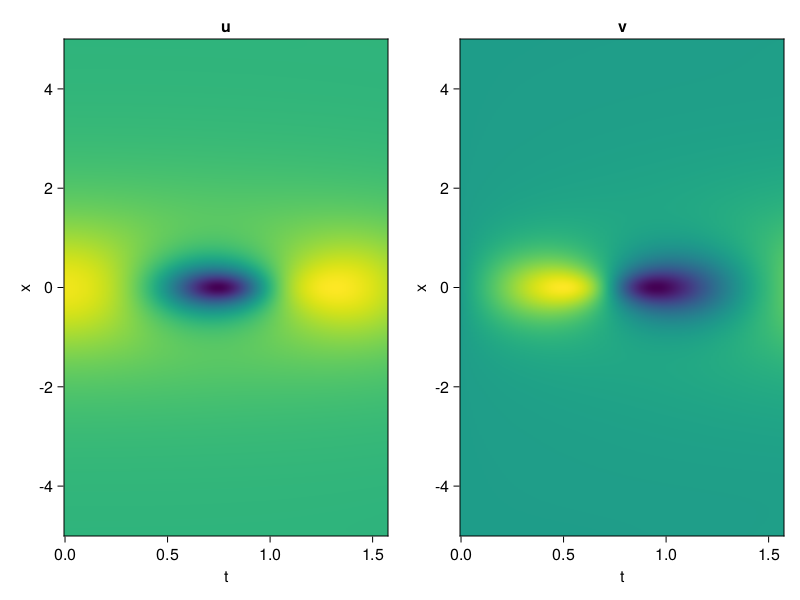
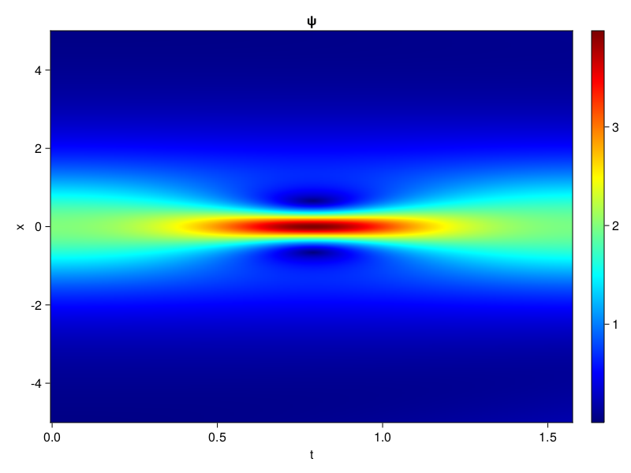
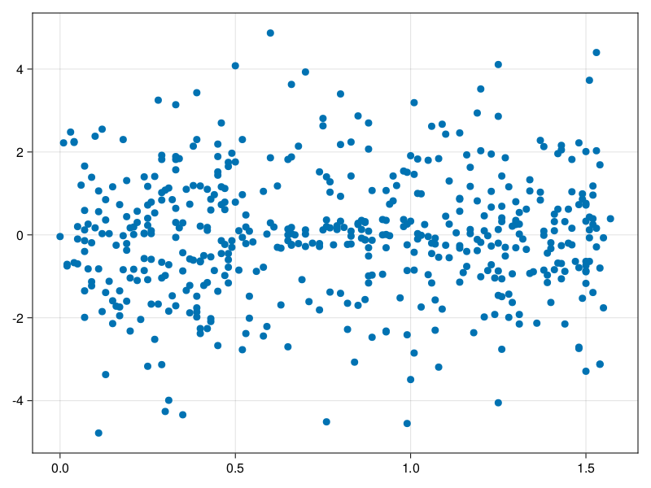

Schrödinger equation
The nonlinear Shrödinger equation is given by
\[\mathrm{i} \partial_t \psi=-\frac{1}{2} \sigma \partial_{x x} \psi-\beta|\psi|^2 \psi\]
Let $\sigma=\beta=1, \psi=u+v i$, the equation can be transformed into a system of partial differential equations
using ModelingToolkit, IntervalSets, Sophon, CairoMakie
using Optimization, OptimizationOptimJL
@parameters x,t
@variables u(..), v(..)
Dₜ = Differential(t)
Dₓ² = Differential(x)^2
eqs=[Dₜ(u(x,t)) ~ -Dₓ²(v(x,t))/2 - (abs2(v(x,t)) + abs2(u(x,t))) * v(x,t),
Dₜ(v(x,t)) ~ Dₓ²(u(x,t))/2 + (abs2(v(x,t)) + abs2(u(x,t))) * u(x,t)]
bcs = [u(x, 0.0) ~ 2sech(x),
v(x, 0.0) ~ 0.0,
u(-5.0, t) ~ u(5.0, t),
v(-5.0, t) ~ v(5.0, t)]
domains = [x ∈ Interval(-5.0, 5.0),
t ∈ Interval(0.0, π/2)]
@named pde_system = PDESystem(eqs, bcs, domains, [x,t], [u(x,t),v(x,t)])\[ \begin{align} \frac{\mathrm{d}}{\mathrm{d}t} u\left( x, t \right) =& - \frac{1}{2} \frac{\mathrm{d}^{2}}{\mathrm{d}x^{2}} v\left( x, t \right) - \left( \left|u\left( x, t \right)\right|^{2} + \left|v\left( x, t \right)\right|^{2} \right) v\left( x, t \right) \\ \frac{\mathrm{d}}{\mathrm{d}t} v\left( x, t \right) =& \frac{1}{2} \frac{\mathrm{d}^{2}}{\mathrm{d}x^{2}} u\left( x, t \right) + \left( \left|u\left( x, t \right)\right|^{2} + \left|v\left( x, t \right)\right|^{2} \right) u\left( x, t \right) \end{align} \]
pinn = PINN(u = Siren(2,1; hidden_dims=16,num_layers=4, omega = 1.0),
v = Siren(2,1; hidden_dims=16,num_layers=4, omega = 1.0))
sampler = QuasiRandomSampler(500, (200,200,20,20))
strategy = NonAdaptiveTraining(1,(10,10,1,1))
prob = Sophon.discretize(pde_system, pinn, sampler, strategy)OptimizationProblem. In-place: true
u0: ComponentVector{Float64}(u = (layer_1 = (weight = [-0.42720502614974976 -0.4539104700088501; 0.02189081907272339 0.27949005365371704; … ; 0.07573390007019043 0.37101078033447266; 0.07861077785491943 -0.4571340084075928], bias = [0.0; 0.0; … ; 0.0; 0.0;;]), layer_2 = (weight = [0.5252875089645386 -0.39002689719200134 … 0.34647712111473083 -0.5503273010253906; -0.02705499902367592 0.15573541820049286 … -0.12169508635997772 -0.08400982618331909; … ; 0.5388408303260803 -0.307856947183609 … 0.2699977457523346 0.006927088368684053; -0.561927080154419 -0.28750982880592346 … 0.2192479521036148 -0.39477652311325073], bias = [0.0; 0.0; … ; 0.0; 0.0;;]), layer_3 = (weight = [0.5535308718681335 0.21748711168766022 … 0.38465559482574463 -0.2077224999666214; 0.09627179056406021 -0.21562378108501434 … 0.5972059369087219 0.005025572143495083; … ; -0.34710609912872314 0.536623477935791 … -0.35381412506103516 -0.09499260038137436; -0.4806142747402191 -0.10808808356523514 … -0.20346598327159882 -0.5326069593429565], bias = [0.0; 0.0; … ; 0.0; 0.0;;]), layer_4 = (weight = [0.603861927986145 0.19883257150650024 … 0.5948451161384583 0.27027127146720886; 0.5427814722061157 0.31574708223342896 … -0.3343101441860199 -0.5825390815734863; … ; 0.09752272814512253 -0.16916991770267487 … 0.5401378273963928 -0.2394346296787262; 0.31554925441741943 0.09524277597665787 … 0.2029549777507782 -0.4435904622077942], bias = [0.0; 0.0; … ; 0.0; 0.0;;]), layer_5 = (weight = [0.35340210795402527 0.04564712569117546 … -0.4670001268386841 0.42496857047080994], bias = [0.0;;])), v = (layer_1 = (weight = [0.19479918479919434 -0.25457650423049927; 0.13364416360855103 -0.10998415946960449; … ; 0.01302945613861084 0.32798272371292114; 0.1664053201675415 0.03445190191268921], bias = [0.0; 0.0; … ; 0.0; 0.0;;]), layer_2 = (weight = [-0.5675320029258728 -0.5810200572013855 … 0.030210882425308228 -0.3275040090084076; 0.4641627371311188 0.08704116940498352 … 0.6030105352401733 -0.18991614878177643; … ; -0.5408724546432495 0.25290343165397644 … -0.26210084557533264 -0.15619291365146637; -0.6067270040512085 0.41688185930252075 … -0.10702753812074661 0.012880131602287292], bias = [0.0; 0.0; … ; 0.0; 0.0;;]), layer_3 = (weight = [0.26035037636756897 -0.07965520024299622 … 0.04338710382580757 0.32962366938591003; 0.3091861605644226 -0.6115847229957581 … -0.2509184181690216 0.4229089915752411; … ; -0.1832817941904068 0.1377822756767273 … 0.08069998770952225 -0.10468181222677231; 0.3090074360370636 0.5145522952079773 … 0.560097873210907 0.5985820293426514], bias = [0.0; 0.0; … ; 0.0; 0.0;;]), layer_4 = (weight = [-0.4823928475379944 -0.29911354184150696 … -0.08141159266233444 0.35925573110580444; 0.34928399324417114 -0.44406774640083313 … 0.4368821084499359 -0.516883373260498; … ; -0.3500862717628479 -0.44126731157302856 … 0.0388680100440979 0.5588759779930115; -0.11512584239244461 -0.05962715670466423 … 0.4356779456138611 -0.38786599040031433], bias = [0.0; 0.0; … ; 0.0; 0.0;;]), layer_5 = (weight = [0.37285587191581726 0.02345644123852253 … -0.4056781828403473 0.30154526233673096], bias = [0.0;;])))Now we train the neural nets and resample data while training.
function train(pde_system, prob, sampler, strategy, resample_period = 500, n=10)
bfgs = BFGS()
res = Optimization.solve(prob, bfgs; maxiters=2000)
for i in 1:n
data = Sophon.sample(pde_system, sampler, strategy)
prob = remake(prob; u0=res.u, p=data)
res = Optimization.solve(prob, bfgs; maxiters=resample_period)
end
return res
end
res = train(pde_system, prob, sampler, strategy)u: ComponentVector{Float64}(u = (layer_1 = (weight = [-0.4423659439138273 -0.46015248683251686; 0.1050572210573646 0.48131093419604726; … ; 0.17665915483987873 0.4502002306582665; 0.10928530766545899 -0.34521077677502326], bias = [-0.04531853757487512; 0.1477744454837174; … ; -0.1418444069408491; 0.09073915291446691;;]), layer_2 = (weight = [0.5347640422022877 -0.20511121112611885 … 0.2605622800633632 -0.44965288671514386; -0.20346737583715002 0.419308386496063 … -0.02826314464956267 -0.19553372741793312; … ; 0.4765016293991517 -0.3082870655535639 … 0.10789052827503268 0.10495793970854347; -0.48617380430486656 -0.20501008371227467 … 0.2386469390815052 -0.39033423536475187], bias = [-0.17158163344197352; 0.3909524191049649; … ; 0.2593246431743317; -0.014726330287089502;;]), layer_3 = (weight = [0.5758591098002437 0.354434026865732 … 0.7021675483623879 0.21776993989912083; 0.07379818566219001 -0.3724509486191613 … 0.2574140361426842 0.10454466975869806; … ; -0.2193325410454732 0.7354524393983705 … -0.24751747529637752 -0.20090777661951684; -0.6083722507260234 -0.20361322745137964 … -0.45906202459814477 -0.8690848630195553], bias = [-0.19972477038086545; 0.15773324774228106; … ; -0.26192106541980736; 0.33769152997847557;;]), layer_4 = (weight = [0.6242381255119362 0.22590370032602222 … 0.5916924503576296 -0.0395567685261212; 1.0930871624910237 0.557245726746413 … 0.38802349588848123 -0.27346219408046996; … ; 0.12941245271861 -0.2526368023520418 … 0.5873799035716553 -0.23852990400027307; 0.6479837685445063 0.32739162295517676 … -0.38020832861000015 -0.27709756423115783], bias = [0.09639183196320161; -0.0755802949980937; … ; 0.20371336398589346; -0.1306621484702669;;]), layer_5 = (weight = [-0.45011032454377725 0.4630233305276408 … -0.015450420604457801 0.9829086150126917], bias = [-0.028510960256086612;;])), v = (layer_1 = (weight = [0.005260029386752316 -0.837760660095458; 0.6372952049940352 -0.14952927863388474; … ; -0.25256975193538495 0.25497164876242584; -0.23274891438794074 -0.05299975298230211], bias = [0.5991254077382432; 0.15019724540201118; … ; 0.15177297460687456; 0.034803989978779176;;]), layer_2 = (weight = [-0.5464531922664346 -0.7565467272813968 … 0.19945961873612314 -0.3818753086015033; 1.0365909800968807 0.21396069400664272 … 0.5118544010915852 -0.30898174360673575; … ; -0.3916741601095437 0.45285872864782856 … -0.2357561091823172 0.06661251566337126; -0.17632180121022806 0.4748393209359017 … -0.3528940417177021 -0.1570202725641796], bias = [0.180792089666062; -0.0859379223215583; … ; -0.169286218004251; 0.17181025173825432;;]), layer_3 = (weight = [0.2000257821738224 0.005119456106230887 … -0.1737429875701561 0.19901894145712548; 0.2013792846054264 -0.5360905001603147 … -0.219952716570994 0.20690047502770836; … ; -0.02022603056794487 0.2332554101366602 … -0.13416289596570358 -0.19769006508362125; 0.4611741959507856 0.5250364358051616 … 0.15060352159679657 0.5413047173301179], bias = [0.1658043735463451; 0.2885987478443514; … ; 0.11009428826177826; -0.12076577466420212;;]), layer_4 = (weight = [-0.3666188745752547 0.043431617355655885 … -0.21759852201004007 0.2083768877115737; 0.38875466199164527 -0.4617118936088653 … 0.5301993167132393 -0.5394623765066576; … ; -0.4269558391671692 -0.4368636793995601 … 0.13013823200760707 0.42989665776597574; 0.18276681128432803 -0.1300640577168198 … 0.6517146801293113 -0.619794491790921], bias = [-0.23597843918689615; 0.12183430754467654; … ; -0.13340759660515808; -0.09240742394578247;;]), layer_5 = (weight = [0.7788576551162423 -0.5223190674721315 … -0.8230868499325915 1.2787355762809383], bias = [0.09291835362945906;;])))phi = pinn.phi
ps = res.u
xs, ts= [infimum(d.domain):0.01:supremum(d.domain) for d in pde_system.domain]
u = [sum(phi.u(([x,t]), ps.u)) for x in xs, t in ts]
v = [sum(phi.v(([x,t]), ps.v)) for x in xs, t in ts]
ψ = @. sqrt(u^2+ v^2)
axis = (xlabel="t", ylabel="x", title="u")
fig, ax1, hm1 = heatmap(ts, xs, u', axis=axis)
ax2, hm2= heatmap(fig[1, end+1], ts, xs, v', axis= merge(axis, (; title="v")))
display(fig)
axis = (xlabel="t", ylabel="x", title="ψ")
fig, ax1, hm1 = heatmap(ts, xs, ψ', axis=axis, colormap=:jet)
Colorbar(fig[:, end+1], hm1)
display(fig)
Customize Sampling
Bascially any sampling method is supportted.
using StatsBase
data = vec([[x, t] for x in xs, t in ts])
wv = vec(ψ)
new_data = wsample(data, wv, 500)
new_data = reduce(hcat, new_data)
fig, ax = scatter(new_data[2,:], new_data[1,:])
prob.p[1] = new_data
prob.p[2] = new_data
prob = remake(prob; u0 = res.u)
# res = Optimization.solve(prob, bfgs; maxiters=1000)OptimizationProblem. In-place: true
u0: ComponentVector{Float64}(u = (layer_1 = (weight = [-0.4423659439138273 -0.46015248683251686; 0.1050572210573646 0.48131093419604726; … ; 0.17665915483987873 0.4502002306582665; 0.10928530766545899 -0.34521077677502326], bias = [-0.04531853757487512; 0.1477744454837174; … ; -0.1418444069408491; 0.09073915291446691;;]), layer_2 = (weight = [0.5347640422022877 -0.20511121112611885 … 0.2605622800633632 -0.44965288671514386; -0.20346737583715002 0.419308386496063 … -0.02826314464956267 -0.19553372741793312; … ; 0.4765016293991517 -0.3082870655535639 … 0.10789052827503268 0.10495793970854347; -0.48617380430486656 -0.20501008371227467 … 0.2386469390815052 -0.39033423536475187], bias = [-0.17158163344197352; 0.3909524191049649; … ; 0.2593246431743317; -0.014726330287089502;;]), layer_3 = (weight = [0.5758591098002437 0.354434026865732 … 0.7021675483623879 0.21776993989912083; 0.07379818566219001 -0.3724509486191613 … 0.2574140361426842 0.10454466975869806; … ; -0.2193325410454732 0.7354524393983705 … -0.24751747529637752 -0.20090777661951684; -0.6083722507260234 -0.20361322745137964 … -0.45906202459814477 -0.8690848630195553], bias = [-0.19972477038086545; 0.15773324774228106; … ; -0.26192106541980736; 0.33769152997847557;;]), layer_4 = (weight = [0.6242381255119362 0.22590370032602222 … 0.5916924503576296 -0.0395567685261212; 1.0930871624910237 0.557245726746413 … 0.38802349588848123 -0.27346219408046996; … ; 0.12941245271861 -0.2526368023520418 … 0.5873799035716553 -0.23852990400027307; 0.6479837685445063 0.32739162295517676 … -0.38020832861000015 -0.27709756423115783], bias = [0.09639183196320161; -0.0755802949980937; … ; 0.20371336398589346; -0.1306621484702669;;]), layer_5 = (weight = [-0.45011032454377725 0.4630233305276408 … -0.015450420604457801 0.9829086150126917], bias = [-0.028510960256086612;;])), v = (layer_1 = (weight = [0.005260029386752316 -0.837760660095458; 0.6372952049940352 -0.14952927863388474; … ; -0.25256975193538495 0.25497164876242584; -0.23274891438794074 -0.05299975298230211], bias = [0.5991254077382432; 0.15019724540201118; … ; 0.15177297460687456; 0.034803989978779176;;]), layer_2 = (weight = [-0.5464531922664346 -0.7565467272813968 … 0.19945961873612314 -0.3818753086015033; 1.0365909800968807 0.21396069400664272 … 0.5118544010915852 -0.30898174360673575; … ; -0.3916741601095437 0.45285872864782856 … -0.2357561091823172 0.06661251566337126; -0.17632180121022806 0.4748393209359017 … -0.3528940417177021 -0.1570202725641796], bias = [0.180792089666062; -0.0859379223215583; … ; -0.169286218004251; 0.17181025173825432;;]), layer_3 = (weight = [0.2000257821738224 0.005119456106230887 … -0.1737429875701561 0.19901894145712548; 0.2013792846054264 -0.5360905001603147 … -0.219952716570994 0.20690047502770836; … ; -0.02022603056794487 0.2332554101366602 … -0.13416289596570358 -0.19769006508362125; 0.4611741959507856 0.5250364358051616 … 0.15060352159679657 0.5413047173301179], bias = [0.1658043735463451; 0.2885987478443514; … ; 0.11009428826177826; -0.12076577466420212;;]), layer_4 = (weight = [-0.3666188745752547 0.043431617355655885 … -0.21759852201004007 0.2083768877115737; 0.38875466199164527 -0.4617118936088653 … 0.5301993167132393 -0.5394623765066576; … ; -0.4269558391671692 -0.4368636793995601 … 0.13013823200760707 0.42989665776597574; 0.18276681128432803 -0.1300640577168198 … 0.6517146801293113 -0.619794491790921], bias = [-0.23597843918689615; 0.12183430754467654; … ; -0.13340759660515808; -0.09240742394578247;;]), layer_5 = (weight = [0.7788576551162423 -0.5223190674721315 … -0.8230868499325915 1.2787355762809383], bias = [0.09291835362945906;;])))